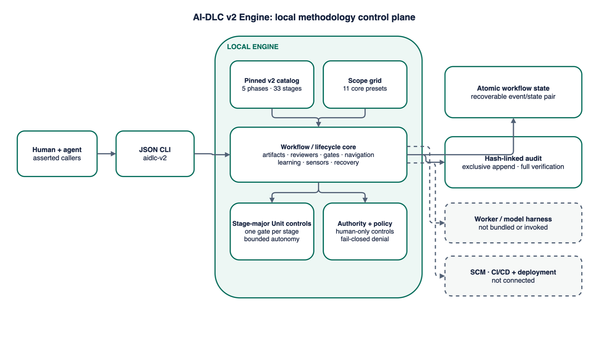

Current implementation
AI-DLC v2 Engine architecture
Inspect scope composition, stage evidence and reviewer gates, stage-major Unit autonomy and recovery, durable transactions, and the worker and delivery systems that remain outside the engine.
System map
Implemented system and explicit delivery boundary

Interactive architecture
Walk the implemented flows
Choose a flow, select any step, or use the controls to move through the sequence. All content is bundled with this page and works without a network connection.
Component map
Three local layers with explicit boundaries
Interface
The installed CLI accepts asserted actors and commands, then returns stable JSON results, catalog views, and exit codes.
Methodology engine
The pinned catalog, scope grid, policy validator, and workflow service enforce v2 plans, evidence, reviewers, gates, navigation, Units, Bolts, and learning.
Durable local store
Atomic JSON state, a recoverable pending pair, and exclusively created hash-linked audit events live in one project directory.
Architecture boundaries
What this release does—and does not—connect
Implemented locally
Exact scope plans, depth and test choices, evidence metadata, reviewer loops, gates, Unit/Bolt controls, recovery, learning, and audit verification.
Caller responsibility
Actor identity and roles are asserted by the invoking environment. Artifact content and workspace-change claims also remain outside the engine.
Not connected
Model or coding-assistant harnesses, source control, ticketing, CI/CD, AWS deployment, and production systems have no client or execution path in version 0.1.
Canonical artifacts
{kind=link}
{kind=link}